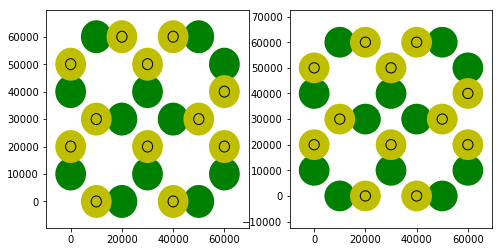

Single colloid manipulations¶
In [6]:
import IceNumerics.Spins as Sp
import IceNumerics.ColloidalIce as Cp
import IceNumerics.Vertices as Vt
import IceNumerics.LAMMPSInterface as LMP
import matplotlib.pyplot as plt
import numpy as np
import copy
%matplotlib inline
Now it is possible to manipulate single colloids in a couple of ways. This is shown here:
First we create a Colloidal Ice system
In [7]:
S = Sp.SquareSpinIce(2,2,Ratio = 1,Lattice = 30e3, Periodic = False, Ordering = "Random", Boundary = "ClosedSpin")
C = Cp.ColloidalIce(S,FieldZ=[30,1],Stiffness_Spread = 0,TrapSepRatio = 0.333333)
Cprev = copy.deepcopy(C)
f, (ax1) = plt.subplots(1,1,figsize = (4,4))
Cprev.display(ax1)

Now we have two new functions:
In [8]:
c = next(iter(C.keys())) # Dont worry about this. It's just to select a random item from C.
help(C[c].flip)
print(20*"#")
help(C[c].bias)
Help on method flip in module IceNumerics.ColloidalIce:
flip() method of IceNumerics.ColloidalIce.ColloidInTrap instance
flips the ColloidInTrap by inverting its direction and its colloid attributes. Returns fliped object
####################
Help on method bias in module IceNumerics.ColloidalIce:
bias(vector) method of IceNumerics.ColloidalIce.ColloidInTrap instance
Flips the ColloidInTrap to make it point in the direction of vector (dot(colloid,vector)>0). Returns fliped object
flip() method:¶
In [9]:
C[c] = C[c].flip()
f, (ax1, ax2) = plt.subplots(1,2,figsize = (8,4))
Cprev.display(ax1)
C.display(ax2)

Notice that the element in the lower left corner is flipped.
In [10]:
for c in C:
if C[c].center[0]<30000:
C[c] = C[c].bias([1,1,0]) # This indicates the direction of the bias
f, (ax1, ax2) = plt.subplots(1,2,figsize = (8,4))
Cprev.display(ax1)
C.display(ax2)

In this case you can see how all the spins left of the center are in a bias position, pointing to the upper right ([1,1,0]) direction.